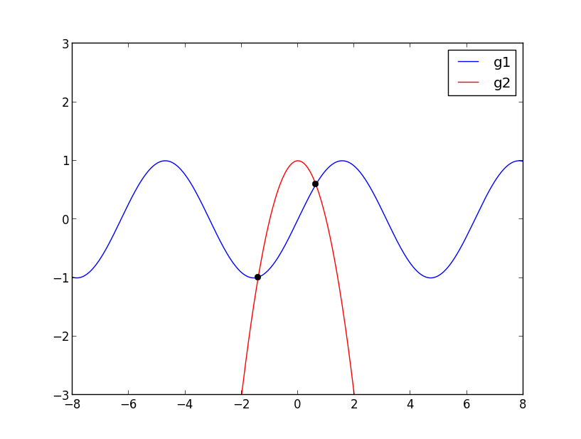

2013 Homework 3¶
Warning
This is a 2013 homework assignment.
Due Wednesday, May 1, 2013, by 11:00pm PDT.
The goals of this homework are to:
- Learn more about “best practices in scientific computing”.
- Get more experience writing Python code and tests.
- Get some experience with Fortran code.
Reading assignment
Download and read the paper Best Practices for Scientific Computing by G. Wilson, D. A. Aruliah, C. T. Brown, et. al. There is a link to the pdf or postscript versions on the right hand side of the arXiv page.
You should be pleased to find that you are now starting to follow many of these best practices, but there are many good tips in the paper that have not been covered in lectures.
There will be a quiz on this paper to complete as part of the homework assignment. This quiz can be found on the Canvas page Homework 3 quiz.
Note: If you are not familiar with the arXiv you might want to explore the wide range of preprints and publications that authors have posted to make them freely available.
Programming assignments You should create a new subdirectory homework3 (of the same private repository you have used for submitting previous homeworks). Develop your code for the problems below in this directory and feel free to commit as often as you like, it will help you recover from blunders.
Recall that Newton’s method for finding the root of a nonlinear function \(f(x)\) consists of choosing an initial guess \(x_0\) and then iterating via:
\[x_{k+1} = x_k - \frac{f(x_k)}{f'(x_k)}\]The module mysqrt.py developed in lectures and found in $UWHPSC/lectures/lecture6 was a special case of this for the function \(f(x) = x^2 - a\) for some \(a\), in which case it converges to \(\sqrt{a}\). (Slightly different notation was used there.)
The section Newton’s method for the square root shows a graphical description of how Newton’s method works.
The section Fortran example for Newton’s method shows the Fortran code for implementing something that is very similar to what you are first asked to do in Python, so you might first look at the main Newton iteration loop in that code if you are not sure how to proceed with this programming.
Write a Python module newton.py that contains a function solve that takes the following inputs:
- fvals, a function that returns the values of \(f(x)\) and \(f'(x)\) for any input \(x\) (see the example below),
- x0, the initial guess,
- debug, an optional argument with default False.
The function should return a tuple consisting of the final iterate (the approximation to the root determined) and the number of iterations taken.
The module should also contain the following test:
Note that the definition of fvals_sqrt illustrates how to return a tuple of values (f,fp) The parentheses are optional in defining this tuple and are not used in the code above, but line 10 could also say return (f,fp). Similarly, line 22 could say (fx,fpx) = ....
Convergence test. The example in mysqrt.py checked the magnitude of the change between one iteration and the next to test for convergence. In your version, instead check the value of \(f(x_k)\) and stop iterating when \(|f(x_k)| < 10^{-14}\).
This does not always guarantee that the value of \(x_k\) is within 1e-14 of the true root of the function, but works well unless \(f'(x)\) is very small at the root.
Do your iteration in a loop that takes at most maxiter = 20 iterations.
Sample output. If your code is written properly, running this test should give the following output:
In [19]: import newton In [20]: newton.test1() solve returns x = 2.000000000000002e+00 after 5 iterations the value of f(x) is 8.881784197001252e-15 solve returns x = 2.000000000000000e+00 after 0 iterations the value of f(x) is 0.000000000000000e+00 solve returns x = 2.000000000000000e+00 after 10 iterations the value of f(x) is 0.000000000000000e+00
With the debug option turned on it should print:
In [21]: newton.test1(debug_solve=True) Initial guess: x = 1.000000000000000e+00 After 1 iterations, x = 2.500000000000000e+00 After 2 iterations, x = 2.050000000000000e+00 After 3 iterations, x = 2.000609756097561e+00 After 4 iterations, x = 2.000000092922295e+00 After 5 iterations, x = 2.000000000000002e+00 solve returns x = 2.000000000000002e+00 after 5 iterations the value of f(x) is 8.881784197001252e-15 Initial guess: x = 2.000000000000000e+00 solve returns x = 2.000000000000000e+00 after 0 iterations the value of f(x) is 0.000000000000000e+00 Initial guess: x = 1.000000000000000e+02 After 1 iterations, x = 5.002000000000000e+01 After 2 iterations, x = 2.504998400639744e+01 After 3 iterations, x = 1.260483237353546e+01 After 4 iterations, x = 6.461085492374608e+00 After 5 iterations, x = 3.540088255585130e+00 After 6 iterations, x = 2.335001794270128e+00 After 7 iterations, x = 2.024031288207058e+00 After 8 iterations, x = 2.000142661533015e+00 After 9 iterations, x = 2.000000005087716e+00 After 10 iterations, x = 2.000000000000000e+00 solve returns x = 2.000000000000000e+00 after 10 iterations the value of f(x) is 0.000000000000000e+00
Note that the statements printed are somewhat different than in the example mysqrt.py and printed at different points so you will need to think about how to implement this properly.
The formatting used for the floats is %22.15e.
The plot below shows two functions \(g_1(x) = \sin(x)\) and \(g_2(x) = 1 - x^2\). These two functions intersect at only two points as indicated by the black dots.
Finding the intersections requires solving \(\sin(x) = 1 - x^2\), or equivalently solving for zeros of the function \(f(x) = g_1(x) - g_2(x).\) This can be done using Newton’s method. Which zero is found depends on the starting guess \(x_0\). For some starting guesses the method might not converge at all, but if we start close enough to one of the zeros, the method will converge to that zero.
A program written to do this might produce the following output:
With initial guess x0 = -5.000000000000000e-01, solve returns x = -1.409624004002596e+00 after 9 iterations With initial guess x0 = 5.000000000000000e-01, solve returns x = 6.367326508052821e-01 after 4 iterations
The goal of this problem is to produce such a program in Python and to produce similar output and plot for a different set of functions: \(g_1(x) = x\cos(\pi x)\) and \(g_2(x) = 1 - 0.6 x^2\).
Start by plotting these functions over the interval \(-10 \leq x \leq 10\) from an interactive IPython session and then use the zoom feature on the plot to get initial guess for each intersection. Note: you should see that there are 4 intersections to be found.
Then write a Python script to set up this problem and solve using the newton.solve function you wrote earlier. Your script should be named intersections.py and should import the newton module or at least:
from newton import solve
The output of your script should have the same form as the example shown above, with the x0 and x values formatted as %22.15e. Of course there should be 4 sets of output instead of two, finding the 4 distinct intersections.
The script should also produce a plot of the two functions over the interval \(-5 \leq x \leq 5\) with the 4 intersections marked with black dots, and save this plot as intersections.png. You do not need to commit `intersections.png` to your git repository, but the code should create it when run.
Plotting hints:
- plot(x,y,’ko’) plots black dots at points specified by the arrays x,y.
- The matplotlib legend command can be used to add the legend indicating which curve is g1 and which is g2.
Starting with the Fortran code in $UWHPSC/codes/fortran/newton (see also Fortran example for Newton’s method), modify this code to solve the intersection problem described above to compute the four intersection points, with output format the same as from the Python version.
You do not have to produce plots for this part, which is not possible to do directly from Fortran.
Create a new program intersections.f90 with the main program.
Put the new functions you need to define in the functions.f90 module. Leave the existing functions f_sqrt and fprime_sqrt in this module (so the new ones will need different names).
Modify the Makefile from $UWHPSC/codes/fortran/Makefile so that typing:
$ make intersections
runs the code that prints out the four intersection points. Typing:
$ make test1
should still work too. Note that this means you may want to define a new macro such as OBJECTS2 that is the list of object files needed to create intersections.exe
583 students only need to turn this in. Others might want to at read this and try to understand the point being made even if you don’t write the code...
Create subdirectory homework3/am583 with modified files for this part of the assignment.
In the original version of newton.f90, the module parameter maxiter was set to 20. Change it to 40 in this version since convergence will be slower for the problem below.
In the original version of newton.f90, the module parameter tol is used for the convergence test. Turn this into a module variable that can be set in the calling program. You will want the lines:
real(kind=8) :: tol save
in the newton.f90 module and then experiment with one of your test programs to make sure you can adjust it in a main program.
Add a new function f_quartic and derivative fprime_quartic to the functions.f90 file that can be used to solve for a zero of the quartic polynomial \(f(x) = (x-1)^4 - \epsilon\). This has two real zeros \(1 \pm \epsilon^{1/4}\).
Make epsilon a module variable that can be set in the calling program to store the desired value of \(epsilon\).
Write a test program test_quartic.f90 that uses these modules and tests the converge for different values of epsilon and tol by use of a double loop. For each value of epsilon test three different convergence tolerances, in order to produce a table that looks like this:
Starting with initial guess 0.400000000000000D+01 epsilon tol iters x f(x) x-xstar 0.100D-03 0.100D-04 13 0.110149887252771D+01 0.613D-05 0.150D-02 0.100D-03 0.100D-09 15 0.110000001620356D+01 0.648D-10 0.162D-07 0.100D-03 0.100D-13 16 0.110000000000000D+01 0.154D-16 0.377D-14 0.100D-07 0.100D-04 14 0.105346394423359D+01 0.816D-05 0.435D-01 0.100D-07 0.100D-09 22 0.101000335631520D+01 0.134D-10 0.336D-05 0.100D-07 0.100D-13 23 0.101000000168878D+01 0.676D-14 0.169D-08 0.100D-11 0.100D-04 14 0.105345384505079D+01 0.816D-05 0.525D-01 0.100D-11 0.100D-09 24 0.100301582272124D+01 0.817D-10 0.202D-02 0.100D-11 0.100D-13 30 0.100100034262656D+01 0.137D-14 0.343D-06
Note that in addition to printing out x and f(x) it prints out the error x-xstar where xstar is the true solution it is converging towards. You can use the print statements below to get the same output format:
print *, ' epsilon tol iters x f(x) x-xstar'
for the header before your loops and then for each epsilon, tol combination:
print 11, epsilon, tol, iters, x, fx, x-xstar 11 format(2d13.3, i4, d24.15, 2d13.3)
Note that f(x) being small does not necessarily guarantee that the error is equally small! As a result in most lines in this table the error is larger than tol.
This function has very small slope near the zero, especially when epsilon is small. In this case using a convergence criterion that is based on the size of the Newton step taken would be a better test for the degree of convergence. You may want to experiment with this if you wish, but this is not required. You might also want to plot this function near the root if you are having a hard time visualizing this.
Make a modified version of the Makefile in this directory so that:
$ make test_quartic
will compile and run this code to produce a table like the one above.
{kind=link}
To submit¶
Your homework3 directory should contain:
- newton.py with your Newton code and tests
- intersections.py with the code to solve the intersection problem and create plots
- newton.f90
- functions.f90
- intersections.f90
- test1.f90 (unchanged, but “make test1” should still work)
- Makefile (modified to add “make intersections” option)
For 583 students, you should also have a subdirectory homework3/am583 that contains:
- newton.f90
- functions.f90
- test_quartic.f90
- Makefile (modified to add a “make test_quartic” option that produces the desired output)
As usual, commit your results, push to bitbucket, and see the Canvas course page for the link to submit the SHA-1 hash code. These should be submitted by the due date/time to receive full credit.